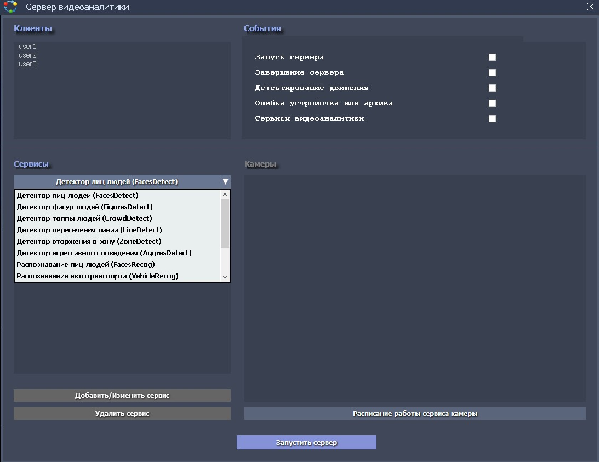
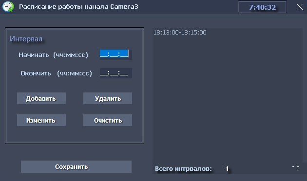
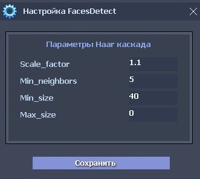
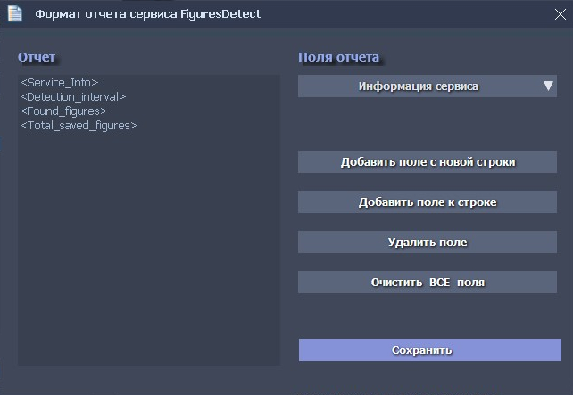

Форма «Видеоаналитика»
Форма «Видеоаналитика»
Эта форма определяет действия системы при запуске сервера видеоаналитики.

Системные сервисы видеоаналитики представляют собой ИИ-агенты (обычно это пред-обученные нейросети или программы производящие математическую обработку видеоданных), способные решать задачи детектирования и анализа или сравнения определенных признаков различных объектов. Список таких сервисов, регулярно пополняется, для решения насущных задач видеонаблюдения.
Сервер видеоаналитики запускает системные сервисы, активные для отдельных камер, закрепленных за конкретным клиентом системы видеонаблюдения. В состав сервера видеоаналитики, входит подсистема отправки результатов работы сервисов и выбранных системных событий, на электронную почту (Email) и/или в мессенджер Max и/или в мессенджер Telegram, каждому из клиентов системы видеонаблюдения «iDLook». Для каждого клиента (список «Клиенты»), в верхней части формы «Сервер видеоаналитики», можно выбрать системные события (панель «События»), наступление которых приведет к отправке сообщения от сервера видеоаналитики. Кроме того, в перечень событий включаются и события сервисов видеоаналитики, выбор и настройку которых можно произвести на панели «Сервисы».
Полный перечень возможных сервисов, приведен в выпадающем списке. По всем вопросам, связанных с поддержкой любых требуемых сервисов видеоаналитики, можно обратится письмом на email компании, в котором необходимо указать:
наименование организации или ФИО физлица;
объект установки ПО (офис, склад, дом и т.п.);
наличие лицензии на ПО «iDLook», а при ее отсутствии: желаемые параметры подключений – кол-во ONVIF камер и RTSP подключений;
список требуемых сервисов видеоаналитики;
необходимость подключения к ЕЦХД.
Для добавления сервиса, работающего по расписанию, необходимо:
Выбрать требуемого клиента из списка «Клиенты» и установить флажки сообщений для клиента и флажок «Сервисы видеоаналитики».
Выбрать требуемую камеру для сервиса, из списка «Камеры» и создать расписание работы сервиса, для этой камеры (кнопка «Расписание работы сервиса камеры»)

Выбрать сервис из списка сервисов и нажать кнопку «Добавить/изменить сервис».
Затем, в списке «Активные сервисы» выбрать добавленный сервис и произвести настройку сервиса (если требуется), нажатием на кнопку «Настройка сервиса». Следует учесть, что многие из поддерживаемых сервисов, уже содержат базовую настройку. Пример формы настройки для сервиса «Детектор лиц людей», производящий поиск лиц людей в видеопотоке, по методу Виолы-Джонса:

Определить формат отчета сервиса, нажатием на кнопку «Формат отчета сервиса».
В открывшейся форме, произвести выбор требуемых полей отчета, например, для сервиса «Детектор фигур людей»:

Для добавления других сервисов (и камер для этих сервисов), произвести аналогичные действия. Следуют помнить, что сервисы детектирующие или обрабатывающие, те или иные события, обычно требуют только настройку сервиса - формат сообщений определяется самим сервисом.
По окончанию настройки всех требуемых сервисов, можно произвести запуск сервера видеоаналитики, нажатием на кнопку «Запустить сервер» - при этом надпись на кнопке изменится на «Отключить сервер». Сервер видеоаналитики может быть запущен и в автоматическом режиме, при запуске программы iDLook, установкой соответствующего флажка на форме «Настройки».
При необходимости, любой из добавленных активных сервисов может быть изменен (кнопка «Добавить/изменить сервис») или удален (кнопка «Удалить сервис»), после остановки сервера видеоаналитики (нажатие на кнопку «Отключить сервер»).
Кроме того, и во время работы сервиса видеоаналитики любой из запущенных сервисов можно остановить/перезапустить «по требованию» - двойным нажатием (double click) кнопки мыши на него в списке активных сервисов. При остановке сервиса, перед его названием, появится символ « - », а при перезапуске – символ « • ». Помимо этой индикации, остановка и перезапуск сервиса «по требованию», сопровождается соответствующими сообщениями.
Активные сервисы, работающие по установленному расписанию, создадут отчет о своей работе, в установленном формате, который будет послан в виде письма на Email и/или в виде сообщения в мессенджер Max и/или в виде сообщения в мессенджер Telegram, клиента.
Активные сервисы, детектирующие те или иные события, уведомят об их наступлении и также пришлют сообщение на Email и/или в мессенджер Max и/или в мессенджер Telegram, клиента.